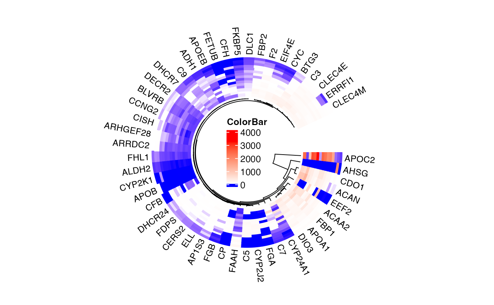

Circos heatmap plot for visualizing gene expressing in multiple samples.
Source:R/circos_heatmap.R
circos_heatmap.RdCircos heatmap plot for visualizing gene expressing in multiple samples.
Usage
circos_heatmap(
data,
low_color = "#0000ff",
mid_color = "#ffffff",
high_color = "#ff0000",
gap_size = 25,
cluster_run = TRUE,
cluster_method = "complete",
distance_method = "euclidean",
dend_show = "inside",
dend_height = 0.2,
track_height = 0.3,
rowname_show = "outside",
rowname_size = 0.8
)Arguments
- data
Dataframe: Shared degs of all paired comparisons in all samples expression dataframe of RNA-Seq. (1st-col: Genes, 2nd-col~: Samples).
- low_color
Character: min value color (color name or hex value). Default: "#0000ff".
- mid_color
Character: middle value color (color name or hex value). Default: "#ffffff".
- high_color
Character: high value color (color name or hex value). Default: "#ff0000".
- gap_size
Numeric: heatmap gap size. Default: 25, min: 0.
- cluster_run
Logical: running cluster algorithm. Default: TRUE, options: TRUE, FALSE.
- cluster_method
Character: cluster methods. Default: "complete", options: "ward.D", "ward.D2", "single", "complete", "average", "mcquitty", "median", "centroid".
- distance_method
Character: distance methods. Default: "euclidean", options: "euclidean", "maximum", "manhattan", "canberra", "binary", "minkowski".
- dend_show
Character: control dendgram display and position. Default: "inside", options: "none", "outside", "inside".
- dend_height
Numeric: dendgram height. Default: 0.20, min: 0.00, max: 0.50.
- track_height
Numeric: heatmap track height. Default: 0.30, min: 0.00, max: 0.50.
- rowname_show
Character: control rownames display and position. Hind first rowname by running rownames(data). Default: "outside", options: "none", "outside", "inside".
- rowname_size
Numeric: rowname font size. Default: 0.80, min: 0.10, max: 10.00.
Examples
# 1. Library TOmicsVis package
library(TOmicsVis)
# 2. Use example dataset
data(gene_expression2)
head(gene_expression2)
#> Genes CT_1 CT_2 CT_3 LT20_1 LT20_2 LT20_3 LT15_1 LT15_2 LT15_3 LT12_1
#> 1 ACAA2 24.50 39.83 55.38 114.11 159.32 96.88 169.56 464.84 182.66 116.08
#> 2 ACAN 14.97 18.71 10.30 71.23 142.67 213.54 253.15 320.80 104.15 174.02
#> 3 ADH1 1.54 1.56 2.04 14.95 13.60 15.87 12.80 17.74 6.06 10.97
#> 4 AHSG 0.00 1911.99 0.00 0.00 0.00 0.00 0.00 0.00 0.00 0.00
#> 5 ALDH2 2.07 2.86 2.54 0.85 0.49 0.47 0.42 0.13 0.26 0.00
#> 6 AP1S3 6.62 14.59 9.30 24.90 33.94 23.19 24.00 36.08 27.40 24.06
#> LT12_2 LT12_3 LT12_6_1 LT12_6_2 LT12_6_3
#> 1 497.29 464.48 471.43 693.62 229.77
#> 2 305.81 469.48 1291.90 991.90 966.77
#> 3 10.71 30.95 9.84 10.91 7.28
#> 4 0.00 0.00 0.00 0.00 0.00
#> 5 0.28 0.11 0.37 0.15 0.11
#> 6 38.74 34.54 62.72 41.36 28.75
# 3. Default parameters
circos_heatmap(gene_expression2[1:50,])
